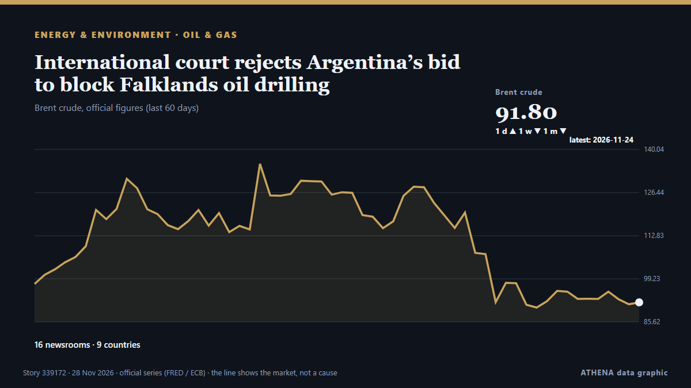

Ενέργεια, Πόροι & Περιβάλλον
ΧορηγούμενοΠαρουσιάζεται από  Cybernetics and Artificial Intelligence Lab Welcome to the Cybernetics and Artificial Intelligence Laboratory, established at the Department of Business Administration of the National and Kapodistrian University of Athens. The lab is headed by Professor Dimitrios Thomakos. The lab aims to do research that can be published in top venues. Our research uses tools and methods of Artificial Intelligence, and lies in the following areas: - Forecasting - Decision making - Cyber security - Finance We are always looking forward to collaborating with exceptional students!
Cybernetics and Artificial Intelligence Lab Welcome to the Cybernetics and Artificial Intelligence Laboratory, established at the Department of Business Administration of the National and Kapodistrian University of Athens. The lab is headed by Professor Dimitrios Thomakos. The lab aims to do research that can be published in top venues. Our research uses tools and methods of Artificial Intelligence, and lies in the following areas: - Forecasting - Decision making - Cyber security - Finance We are always looking forward to collaborating with exceptional students!
Οι τίτλοι των ειδήσεων παρουσιάζονται στα αγγλικά, όπως δημοσιεύτηκαν.

Πετρέλαιο & φυσικό αέριοInternational court rejects Argentina’s bid to block Falklands oil drilling
At a hearing earlier this month, Argentina said drilling should not be allowed until the issue of sovereignty had been resolved. από The Irish News (Belfast)
| 15 Νοε | 51 |
|---|---|
| 16 Νοε | 109 |
| 17 Νοε | 87 |
| 18 Νοε | 84 |
| 19 Νοε | 80 |
| 20 Νοε | 54 |
| 21 Νοε | 43 |
| 22 Νοε | 36 |
| 23 Νοε | 78 |
| 24 Νοε | 80 |
| 25 Νοε | 60 |
| 26 Νοε | 72 |
| 27 Νοε | 45 |
| 28 Νοε | 25 |
Gazprom, BOTAS extend Russian gas supply deal by 3 years
Turkey extended its long-term natural gas import contract with Iran, according to people familiar with the matter. από Rigzone
Iran launches 10 natural gas industry projects with $350m investment
Tehran, IRNA — Iran has commissioned 10 natural gas industry projects under five development plans, backed by $350 million in investment, to increase daily production capacity by 32 million cubic… από IRNA (English)
Saipem wins $650 million in Aramco offshore contracts across five Saudi fields
Saipem has won two Aramco offshore contracts worth about $650 million, covering seven production deck manifolds, about 39 km of pipeline and 41 km of power cable across the Marjan, Safaniya, Manifa… από World Oil
Nigeria absent at closing plenary
The development made COP31 the longest climate summit in the convention's history and arguably one of the most criticised in recent years. από Premium Times
Ece Temelkuran’s Nation of Strangers is an insider’s guide to losing one’s home
After the failure of COP31, climate diplomacy faces monumental challenge
The 194 parties left Antalya on Sunday without reaching an agreement on the final decision, raising serious questions about the role of future global conferences. από Le Monde (English)
Major storm batters US on Thanksgiving holiday
A powerful storm disrupted Thanksgiving celebrations for millions of Americans on Friday, as New York’s famed Macy’s parade was postponed for the first time in its 100-year history. από Dawn
Bangchak refinery fire linked to heat exchanger rupture
Bangchak Corporation has begun investigating the cause of a fire at its Phra Khanong refinery in Bangkok after a heat exchanger in the hydrocracking unit ruptured, according to a statement issued on… από Bangkok Post
Parts of the US Clean up, Power Outages Being Restored after Thanksgiving Storm Soaks East Coast
About 480,000 homes and businesses remained without power on Friday (Nov 27), down from 900,000 on Thursday. από CNA (Channel NewsAsia)
UKRAINE PROTESTS SANCTIONED RUSSIAN OFFICIAL’S APPOINTMENT TO IAEA LEADERSHIP
Foreign Minister Andrii Sybiha branded Ferapontov's appointment as IAEA deputy director general "absurd," and described him as "an accomplice in one of the greatest threats and gravest crimes against… από Kyiv Independent
26 critically endangered turtles found hidden in travelers' luggage at Schiphol
On Saturday, November 21, the Netherlands Food and Consumer Product Safety Authority (. από NL Times
OPEC+ set to keep oil production targets steady
VIENNA: OPEC+ oil producers are set to keep first-quarter 2027 output targets unchanged at Sunday's meeting, three sources said, with uncertainty over the Iran war and disagreeme... από Oman Observer
Thailand presses Myanmar over arsenic mining pollution
Thailand is pressing Myanmar to tackle unregulated mining after arsenic levels in Mae Sai tap water hit nearly 30 times government limits. από The Sun Malaysia
Brazil zoo hails birth of Spix’s macaw chick as boost for species’ recovery
SAO PAULO: When a tiny blue chick finally broke free from its shell after weeks of anxious waiting, keepers at Brazil’s Sao Paulo Zoo saw more than the birth of a bird; they saw a glimmer of hope for… από Arab News
US pushed Venezuela, Iraq to consider leaving OPEC
LONDON/ BAGHDAD/ HOUSTON: The Trump administration encouraged Venezuela and Iraq to consider leaving OPEC earlier this year and prevented Venezuela from paying its annual membership dues to the… από Business Recorder
Iraq's oil revenues hit $8.8bn as it prepares to ask for higher Opec quota
Iraq's oil revenue from crude exports rose to $8.8 billion in October, the oil ministry said, as the country prepares to ask Opec to increase its quota at a meeting on Sunday. από The National
Deadly Houthi Strike at Jazan Refinery Halts Some Operations
An attack on Saudi Arabia's oil refinery in the southern province of Jazan temporarily halted some of the facility's operations and killed one worker, the latest assault by Yemen's Iran-backed… από Rigzone
Trump backs Iraqi leader’s efforts to assert more state authority
Nov 27 (Reuters) - US President Donald Trump on Friday backed the Iraqi leader's drive to assert state control, including stopping the smuggling of Iraqi oil, moves that put Baghdad in direct… από Al-Monitor
Diesel tanker carrying up to 7,000 tonnes sinks near Ibiza, killing one
An oil tanker carrying up to 7,000 tonnes of diesel has sunk off the coast of Ibiza, leaving one crew member dead, authorities have said. από Daily Mirror
Envision Energy partners with Greensteel Australia on 400 MW Green Hydrogen System for low-carbon steelmaking
Envision Energy, a global leader in green technology announced a strategic partnership with Greensteel Australia, the Australian-owned company building the. από Cyprus Shipping News
Qatar LNG exports hit highest level since U.S.-Iran war began, Bloomberg reports
Shipments from Ras Laffan have risen 25 percent in a month, boosting supplies to Europe and Asia ahead of peak winter demand. από Doha News
Petronas Names ‘World's First’ Nearshore FLNG Facility
Petronas has officially named its third floating liquefied natural gas (FLNG) facility, PFLNG TIGA, at Samsung Heavy Industries' shipyard in South Korea, ahead of… από Offshore Engineer
IAEA working with Russia, Ukraine on ceasefire to repair power link at Zaporizhzhia nuclear plant
Nov 26 - The UN nuclear watchdog said on Thursday it was working with Russia and Ukraine to arrange a new local ceasefire at the Russian-held Zaporizhzhia nuclear power plant, following another loss… από The Straits Times
Israel has turned Gaza into a 'toxic wasteland'
The new report examines the devastating environmental impacts of Israel’s attacks on the Palestinian strip. από TheJournal.ie
Italy weighs biggest hunting expansion in years, alarming wildlife groups
The Bill would open up more land to hunting, lengthen seasons and add previously protected species. από The Straits Times
Tanzania secures $4.7 billion climate financing pledges at COP31
Tanzania has secured climate financing commitments and investment opportunities worth about... από The Citizen (Tanzania)
'King tide' waves batter California coast, soaking San Francisco
Massive waves carried on king tides battered California's coast Wednesday, prompting evacuations and soaking San Francisco, but sparing feared mass disruptions to Thanksgiving holiday travel. από Phys.org
Detonation of degraded lead azide in US's Iowa raises public concern
The Army went ahead with its planned detonation of volatile lead azide reserves Wednesday morning, according to the service. από Defense News
Black Friday Kicks Off in Greece With Discounts of Up to 70%
Black Friday is here, with discounts of up to 70%. από to vima
UK to Invest £9.5 Million in Ukraine Wind Farm to Be Built by Elementum Energy
The UK is to invest £9.5 million ($12.4 million) in a 200 MW wind farm in Ukraine capable of powering 300,000 households. από Kyiv Post
Oil slips over 1% as supply glut prospect offsets Middle East disruption fears
Brent crude futures drop $1.35, or 1.5%, to $90.05 a barrel. από Express Tribune
Trafigura appoints Helio Cumbi as Executive Director, Mozambique
Trafigura has appointed Helio Cumbi as Executive Director, Mozambique, and Business Development Lead for East and Southern Africa Oil. από Club of Mozambique
Forum Chair backs Australia’s COP31 role as Albanese defends conference spending
Australian Prime Minister Anthony Albanese has defended the cost of hosting and participating in COP31, saying climate action is a matter of Australia's national interest, regional security and its… από Post-Courier (PNG)
Nepal begins process to declare 213 missing Indians dead in August floods
The Nepalese government has also shared details of the missing Indians, such as their names and government identity card numbers. από Hindustan Times